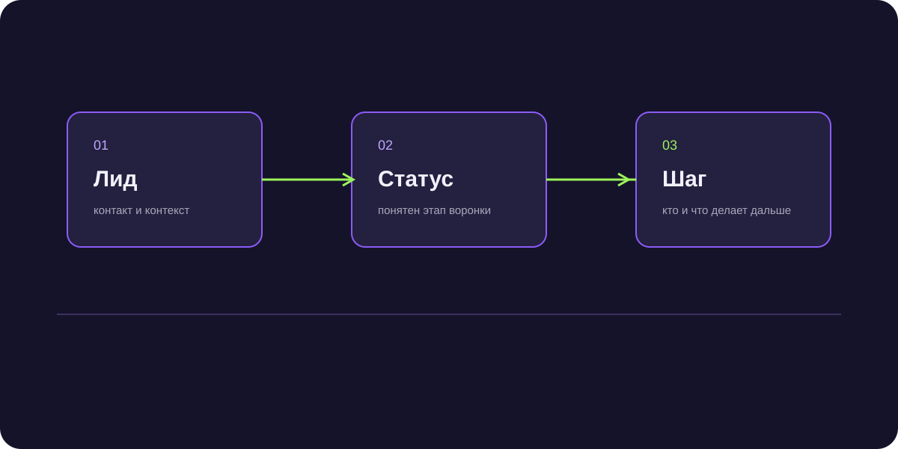

Нейросеть для отдела продаж: практические сценарии применения
Нейросеть для отдела продаж выступает мощным мультипликатором эффективности сейлзов, беря на себя рутинную переписку, подготовку персонализированных предложений и автоматический аудит качества коммуникаций.

Короткий ответ
Нейросеть для отдела продаж автоматизирует наиболее трудоемкие рутинные операции коммерческой команды: расшифровку записей звонков и переписок с фиксацией договоренностей, мгновенное формирование персонализированных коммерческих предложений под боли заказчика, генерацию индивидуальных заходов для холодного аутрича и прогнозный скоринг вероятности успешного закрытия сделок в CRM-системе.
Топ-4 задачи сейлзов, которые забирает нейросеть
Менеджеры тратят до 65% времени на бюрократию и заполнение отчетов. ИИ возвращает фокус на переговоры:
- Транскрибация и саммари звонков: нейросеть слушает диалог, фиксирует договоренности, бюджет и дедлайны, автоматически обновляя поля в CRM.
- Генерация персонализированных заходов: ИИ анализирует сайт потенциального клиента и за 5 секунд составляет точечный оффер для первого сообщения.
- Помощь в отработке сложных возражений: бот подсказывает менеджеру в режиме подсказки проверенные контраргументы по базе знаний компании.
- Автоматический контроль регламентов (Речевая аналитика): система выявляет пропущенные обязательные вопросы скрипта без ручного прослушивания РОПом.
Как внедрять нейросети без саботажа команды
Менеджеры часто боятся, что их заменят. Позиционируйте ИИ как «личного умного ассистента», который избавляет от скучной рутины, помогает больше продавать и зарабатывать больше комиссионных.
Экономический эффект внедрения
Компании, внедрившие нейросети в коммерческий блок, отмечают рост скорости обработки сделок на 30–50% и снижение срока адаптации новых менеджеров с 2 месяцев до 2 недель.
Экономия 40 часов работы РОПа в месяц за счет ИИ-аудита диалогов
В дистрибьюторской компании NextGen настроил автоматический анализ всех Telegram-переписок менеджеров: ИИ подсвечивал зависшие диалоги без назначенного шага, подняв дисциплину отдела на 87%.